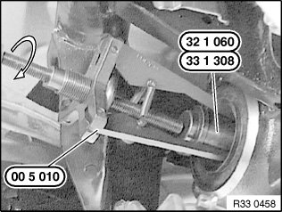
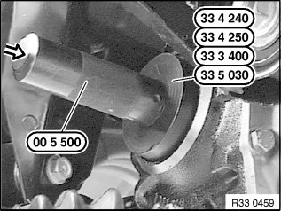

33 11 151 Replacing Shaft Seal For Drive Flange Left or Right
33 11 151 Replacing shaft seal for drive flange left or rightSpecial tools required:
Necessary preliminary tasks:
^ Remove drive flange from rear differential
^ If necessary, press off dust cover

Use special tool 00 5 010 and 32 1 060 / 33 1 308 to remove radial shaft seal

Coat housing plate flange and sealing lips of new shaft seal with approved rear differential oil.
Drive in new shaft seal as far as it will go with following special tool(s) (depending on rear differential /outside diameter).
00 5 500 + 33 3 400 : 168K/L - 78x44x10
00 5 500 + 33 4 240 : 188K/L/LW -
90x44x10
00 5 500 + 33 4 250 : 215K/L/LW, 220K to 230K - 100x50x10
33 5 030 : 210, 215 with lock - 76x50x10
After installation:
^ Correct gearbox oil level/change differential oil